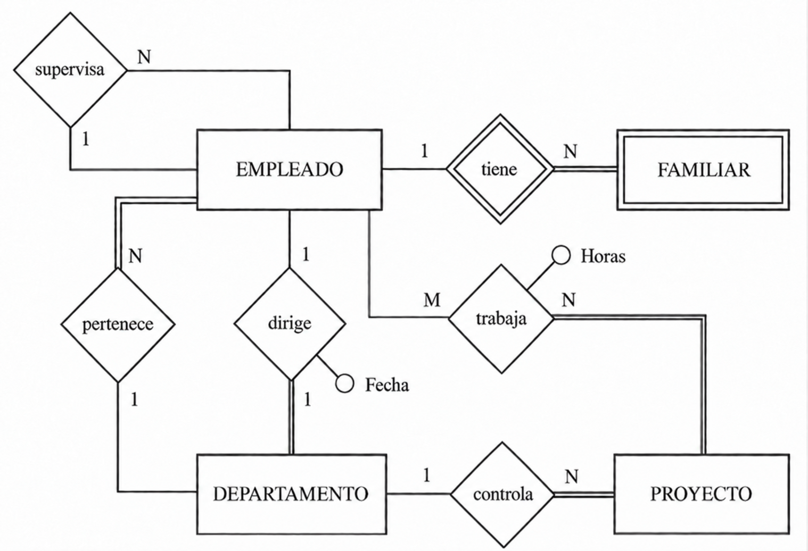

Empresa
Retomamos la empresa de departamentos y proyectos estudiada en el modelo E/R y en el modelo relacional. Empresa se utiliza para los ejemplos guiados de los apuntes. En DDL construiremos sus cinco tablas progresivamente dentro de la base de datos empresa: empezaremos con departamentos y empleados sin restricciones y completaremos las tablas y relaciones a medida que avancemos en las explicaciones.
Cada empleado pertenece a un departamento y puede tener un supervisor. Cada departamento tiene un director y controla proyectos. Los empleados pueden trabajar en varios proyectos, con unas horas semanales en cada uno, y tener varios familiares.
Modelo E/R

El diagrama es el utilizado en el tema de modelo relacional. Muestra las entidades y relaciones; se omiten los atributos de las entidades para facilitar su lectura. Las dobles líneas indican participación total y FAMILIAR es una entidad débil identificada a través del empleado.
Modelo relacional
Esta es la estructura final que construiremos en los ejemplos de DDL. Adaptamos los nombres a SQL y conservamos codigo como identificador, como en los primeros ejemplos. El DNI es una clave candidata del empleado; salario corresponde al sueldo del modelo original.
Solución propuesta
- DEPARTAMENTOS (codigo, nombre, codigo_director, fecha_inicio_direccion)
- PK: (codigo)
- UNIQUE: (nombre), (codigo_director)
- FK: codigo_director->EMPLEADOS(codigo) [no nulo] [único]
- EMPLEADOS (codigo, dni, nombre, direccion, telefono, fecha_nacimiento, salario, correo, codigo_departamento, codigo_supervisor)
- PK: (codigo)
- UNIQUE: (dni), (correo)
- FK: codigo_departamento->DEPARTAMENTOS(codigo) [no nulo]
- FK: codigo_supervisor->EMPLEADOS(codigo)
- PROYECTOS (codigo, nombre, codigo_departamento)
- PK: (codigo)
- UNIQUE: (nombre)
- FK: codigo_departamento->DEPARTAMENTOS(codigo) [no nulo]
- FAMILIARES (codigo_empleado, nombre, parentesco, fecha_nacimiento)
- PK: (codigo_empleado, nombre)
- FK: codigo_empleado->EMPLEADOS(codigo)
- TRABAJA (codigo_empleado, codigo_proyecto, horas)
- PK: (codigo_empleado, codigo_proyecto)
- FK: codigo_empleado->EMPLEADOS(codigo)
- FK: codigo_proyecto->PROYECTOS(codigo)
Las columnas que forman parte de una PK son obligatorias. En los ejemplos también definiremos otras reglas con NOT NULL, UNIQUE y CHECK.
Relaciones
- Departamento–empleados: 1:N. Todo empleado pertenece a un departamento.
- Empleado–supervisor: relación reflexiva 1:N. El supervisor es opcional.
- Empleado–departamento dirigido: 1:1. Todo departamento tiene director; un empleado dirige como máximo un departamento.
- Departamento–proyectos: 1:N. Todo proyecto pertenece a un departamento.
- Empleado–familiares: 1:N, con identificación del familiar mediante el empleado y el nombre del familiar.
- Empleados–proyectos: N:M, transformada en
trabaja, que guarda las horas semanales.
La regla del modelo E/R «todo proyecto tiene al menos un empleado» necesita un control adicional: no queda garantizada solo con las PK y FK de trabaja.
Consulta la secuencia de construcción de Empresa para saber en qué apartado incorporaremos cada parte. Estas tablas se conservarán para los ejemplos posteriores.